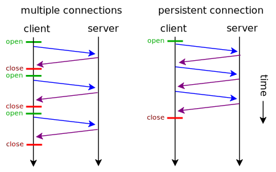

SPDY && HTTP 2.0
The new web protocols
Why do we need them?
HTTP versions
- HTTP/0.9 (1991)
- HTTP/1.0 (1996)
- HTTP/1.1 (1997, 1999)
The Internet was done so well that most people think of it as a natural resource like the Pacific Ocean, rather than something that was man-made. When was the last time a technology with a scale like that was so error-free? The Web, in comparison, is a joke. The Web was done by amateurs.
- Alan Kay
HTTP/1.0
Persistent connections not default
Persistent connection
HTTP/1.0
New header introduced:
Connection: Keep-Alive
HTTP/1.1
Persistent connections default
HTTP pipelining
HTTP pipelining

HTTP pipelining
Only enabled by default in Opera
Still only FIFO, no true multiplexing
More HTTP performance issues
Headers are not compressed (~0.7kB)
Headers are re-sent a lot
How to reach better performance?
Developers - Use several domains
Browsers - 6 connections per domain
SPDY
Developed by Google
Aimed to reduce page load time by 50%
Minimize deployment complexity
Improve web security
Does not replace HTTP
How does it work?
Multiplexing - only one connection
Compressed headers
Prioritization
Only new/changed headers
Server push/hint
Eliminate redundant headers
User-Agent, Host, and Accept-headers are static
Other headers are rarely changed
Server push
Data is sent to client without being requested
X-Associated-Content header
Example index.html
<html>
<head>
<title>My dog</title>
<link href='main.css' type='text/css' rel='stylesheet'>
</head>
<body>
<img src='dog.jpg'>
<script src='main.js'></script>
</body>
</html>
Without server push (HTTP/1.1)
Server push
Server push
Vastly enhances page-load for first-time visitors
Works best for non-cached resources
Redundant data if resource is cached
Server hint
Server suggests specific resources
X-Subresources header
How web caching works
Cache-Control: max-age=120- If fresh in cache - everything is fine
- If not - ask server if modified
- 304 - not modified, no body
- 200 - indeed modified, full response
Without server hint
Server hint
Server hint
Better option for returning visitors
Works best for cached resources
Performance improvement
27-60% without SSL
39-55% over SSL
Very good for high packet loss rate
Good for high RTT
SPDY issues
SSL handshakes
Worse perfomance when connection is lost
Harder to implement
Browsers with SPDY
Chrome
Firefox
Opera
Servers with SPDY
Jetty
Apache
nginx
Google?
Websites using SPDY
gmail.com
wordpress.com
twitter.com
facebook.com (will soon support)
Want to know if you use it?
chrome://net-internals/#events&q=type:SPDY_SESSION%20is:activeHTTP/2.0
Under development by IETF's HTTPbis working group
Targeting 2014 for release
Protocols that are considered:
SPDY
Microsoft's HTTP Speed+Mobility
HTTP/2.0
Initial draft Nov 2012 - straight copy of SPDY
SPDY is just something to start with